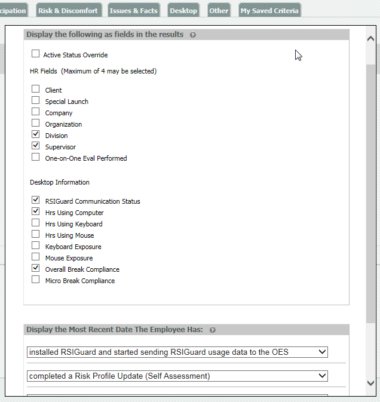
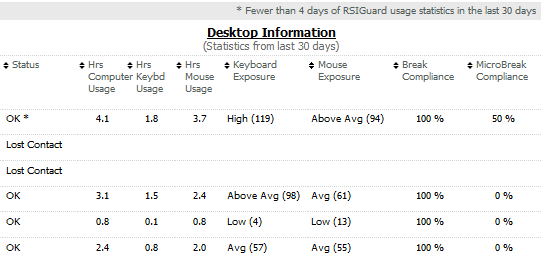

You may configure the report output further in the Employee List Report (used as a basis for any of the other reports) to include columns for a specific log point, HR data and Desktop information from RSIGuard for each user. You can also configure report output in saved criteria sets.
To configure report output:
In the Employee List Report, click the Configure Output link next to the Run Report button.
You can also add a date for a log point to your report. For log point definitions, see Appendix A.

Optional fields (if enabled) may include:
NTID (or other id field): Optional employee ID field
Active Status Override (if enabled): Indicates whether a user has Active Status Override
HR Fields: You can include a maximum of four HR fields
Desktop Information: Can include any, all or none
Display the most recent date the user has: [completed some activity]. Up to four log points may be included.
Selected RSIGuard Desktop Information (from the last 28 days) will be included for users in the Employee List Report who have RSIGuard installed and are sending RSIGuard data to the OES.
